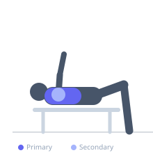
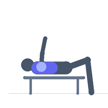

Exercise guide / Pec Deck Peak Contraction
Pec Deck Peak Contraction
A pec deck flye variation where each repetition includes a deliberate 2–3 second isometric hold at the fully contracted position (arms together in front). This peak contraction technique maximizes tension on the pectoralis major at its shortest length, where the muscle generates a powerful squeeze. The paused technique is used specifically to develop the mind-muscle connection and improve the ability to feel and contract the chest at peak.
Primary muscles
pectoralis major sternal
Secondary muscles
pectoralis major clavicular
deltoid anterior
Equipment
Pec Deck / Fly Machine


Starting position
- Sit in a pec deck machine with the back fully against the pad. Grip the handles or place forearms in the arm pads. Begin with arms open to the sides at shoulder height.
Setup
- Adjust the seat height so the arms are at shoulder level when in the starting position. Adjust the starting-width to allow a full range of motion without shoulder discomfort. Select a moderate, controllable weight.
Steps
- Step 1: Begin with arms open, feeling the chest stretch.
- Step 2: Drive the arms together in a sweeping arc.
- Step 3: At full contraction — arms as close together as the machine allows — hold the position for 2–3 seconds. Squeeze the chest as hard as possible.
- Step 4: Return under control to the starting position, feeling the full stretch. Repeat.
Coaching cues
- Squeeze as hard as you possibly can at the top — try to touch your elbows together
- The hold is not a rest — it is the most important part of each rep
Breathing
- Exhale as arms come together, hold breath briefly during the peak isometric, inhale on the return.
Range of motion
- Full range from maximum comfortable stretch to full contraction. The key is the held peak at the top.
Tempo
- 2-3-2-1 (2s sweep in, 3s peak hold, 2s return, 1s stretch)
Common mistakes
- Releasing the squeeze immediately at the top instead of holding the contraction
- Using momentum to swing the arms together — slow and deliberate movement is essential
- Shoulder blades lifting off the back pad during the squeeze
Safety
- Keep the back fully in contact with the seat back throughout
- Adjust the starting width if shoulder discomfort occurs at the open position
Training
- hypertrophy: 10–15 reps
- hypertrophy: 3–4 sets
- Rest: {'hypertrophy': 75}